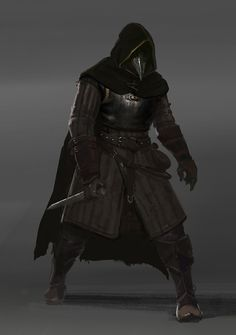

Changeling

A changeling can shift its face and form with a thought as a form of artistic and emotional expression.
Racial Traits: +2 Charisma, +1 to One Other Ability Socre, Shapechanger, Changeling Instincts
Elf

Elves are a magical pepople of otherworldy grace, living in the world but not entirely part of it.
Racial Traits: +2 Dexterity, Darkvision, Keen Senses, Fey Ancestry, Trance
Kenku
Haunted by an ancient crime that robbed them of their wings, the kenku wander the world as vegabonds and burglars who live at the edge of human society.
Racial Traits: +2 dexterity, +1 Wisdom, Expert Forgery, Kenku Training, Mimicry